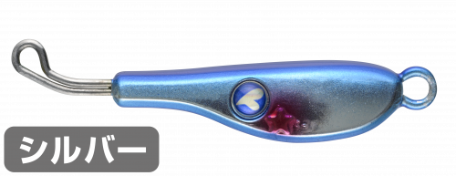
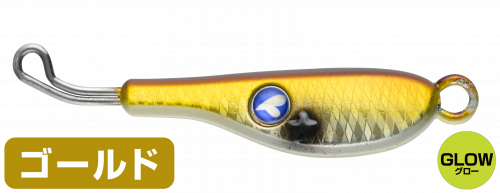
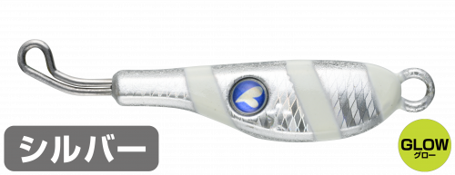
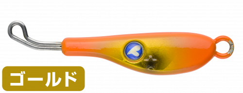
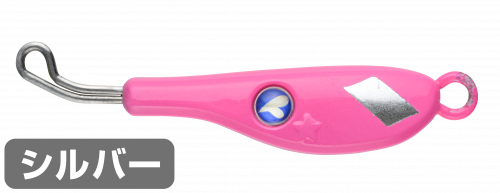

TGストライク
（TG STRIKE）
TGストライクはBlueBlue（ブルーブルー）のタングステン製ブレードジグです。
高比重タングステンとリアバランスで、どんな風にも負けずに姿勢よく飛び、着水後はボトムまで一直線に高速でフォールします。着水時やフォール時のフック絡み・ブレード絡みを徹底的に抑え、ブレードジギングの必殺技「超高速巻き」にも完全対応しています。

画像出典:BlueBlue公式HP
スペック
- メーカー
- BlueBlue（ブルーブルー）
- タイプ
- ブレードジグ（タングステン）
- ウェイト
- 45g
- ターゲット
- サワラ・サゴシ・青物・タチウオ
- 価格
- 2,670円（税別）
▼今すぐチェック

TGストライクの特徴
タングステンのリアバランスで、ダントツに飛んで一直線に落ちる
-
ダントツの飛距離
高比重タングステンとリアバランスで、向かい風でも姿勢よく飛びます。遠くのナブラや潮目にも届けられます。
-
超高速フォールでボトムが分かる
着水後はボトムまで直線的に高速でフォール。ボトムタッチがはっきり分かり、水面からボトムまでスピーディーに探れます。
-
とにかく絡まない
高度なバランス設計で、着水時やフォール時のフック絡み・ブレード絡みを徹底的に回避。トラブルなく投げ続けられます。
TGストライクの使い方
基本はボトムまで沈めてからの超高速巻き。ブレードジギングの定番の誘い方で、どんなに速く巻いても軽く引けます。
反応がないときは巻き速度を変えたり、途中でフォールを入れたりして、魚のいるレンジとスピードを探しましょう。
TGストライクの得意な状況
サワラやサゴシ、青物を狙うショアやボートのブレードジギング。遠くのナブラを狙いたいときや、潮が速くてほかのジグが流されるとき、深い場所を手早く探りたいときに向いています。
ワンポイント
タングステンでシルエットが小さいので、ベイトが小さいときや食い渋るときにも効果的。鉛のブレードジグより遠くまで届くので、届かなかったナブラを狙うときの切り札になります。
BlueBlueのブレード系ルアーの使い分け
| モデル | 全長／自重 | 得意な場面 |
|---|---|---|
| TGストライク | 45g | タングステンで遠投と超高速フォール。ブレードジギングに（本記事のモデル） |
| メタルシャルダス | 8〜35g | コンパクトなメタルブレードベイト。ライトショアジギングに |
| シャルダス20 | 75mm／18g | 表層をデッドスローで引けるシャローブレード |
狙う魚と距離、使うタックルでブレード系ルアーを使い分けましょう。
人気カラー
公式ラインナップから4色を紹介します（カラー名は公式の表記のまま）。

#03 黄金アジアジを意識したゴールド系のカラー。アジがベイトのときや、濁り気味のときに。

#05 ゼブラグローゼブラ柄にグローをプラス。マズメの暗い時間帯や濁りに。

#08 パッションオレンジオレンジ系のアピールカラー。濁りや曇りの日に目立たせたいときに。

#10 ベタピンシルバーピンクとシルバーのフラッシング。日中のサワラ狙いに。
画像出典:BlueBlue公式HP
TGストライクに似ているルアー
-
 ブレードショーテル
シャウト
詳細はこちら＞
ブレードショーテル
シャウト
詳細はこちら＞
30g〜130gのテイルブレードジグ。もっと重さを選んで、深場や潮の速い場所を攻めたいときに。
-
 ドラッグメタル キャスト SSブレード
DUO
詳細はこちら＞
ドラッグメタル キャスト SSブレード
DUO
詳細はこちら＞
28g〜80gのスイミングブレードジグ。シングルフック仕様でブレードジギングを楽しみたいときに。
-
 メタルマジックTG
アクアウェーブ
詳細はこちら＞
メタルマジックTG
アクアウェーブ
詳細はこちら＞
タングステン製のスピンテールジグ。同じタングステンで、20g〜60gから重さを選びたいときに。